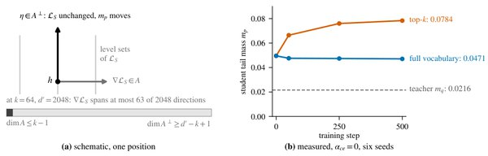

The Gradient That Top-k Distillation Never Computes

In one sentence. Proves that renormalized top-k distillation has exactly zero gradient along the directions that control the teacher's tail mass, so a student's tail mass can drift away from the teacher's, and measures the effect on seven open-weight teachers.
Abstract
Many deployed distillation pipelines show the student a truncated view of the teacher: keep the top-k probabilities, renormalize, and minimize a divergence on what remains. Renormalization is assumed to account for the missing mass. We prove that it removes the visibility of tail mass, not the freedom to move it. The renormalized objective depends only on log-odds among the retained tokens, so at each position its gradient along the directions that control tail mass is exactly zero; on a real teacher that component measures 2-3times10^{-15} of the gradient. The full-vocabulary gradient equals the truncated gradient plus a residual weighted by the tail masses, and training acts only on the first term. Without the cross-entropy term, a top-k student's tail mass drifts away from the teacher's while a full-vocabulary control moves slightly toward it; with it, the gap shrinks about fourfold but persists. On seven open-weight teachers, the retained set determines the teacher's distribution only from k=d+1 (d the hidden dimension): recovery is exact from there on all seven, and commonly cached sizes sit below it. In our off-policy runs the practical effect is real but smaller than the choice of teacher-student pair. Renormalization is a normalization, not a safeguard. The code is available at https://github.com/KurbanIntelligenceLab/top-k-distillation.
BibTeX
@article{khanbayov2026the,
title = {The Gradient That Top-k Distillation Never Computes},
author = {Khanbayov, Rasul and Kurban, Hasan},
journal = {arXiv preprint arXiv:2610.15589},
year = {2026}
}